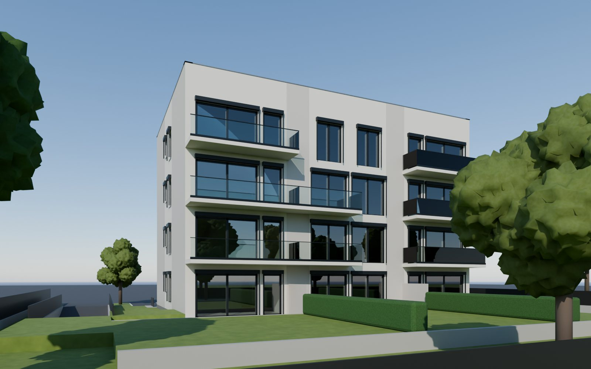
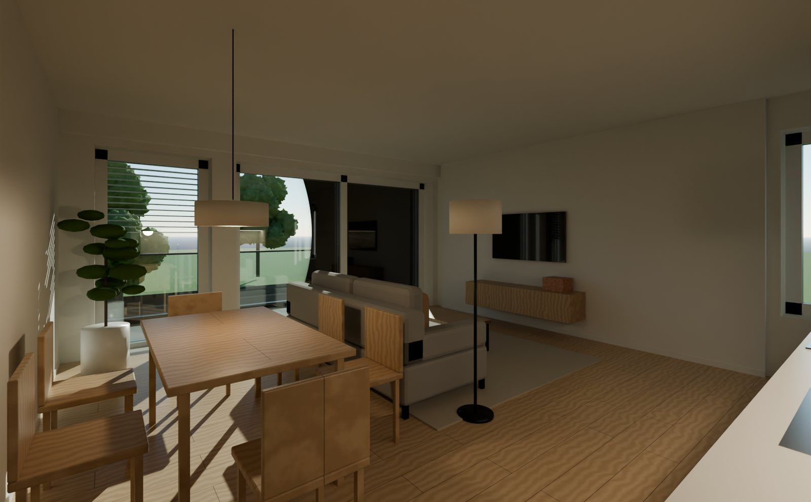
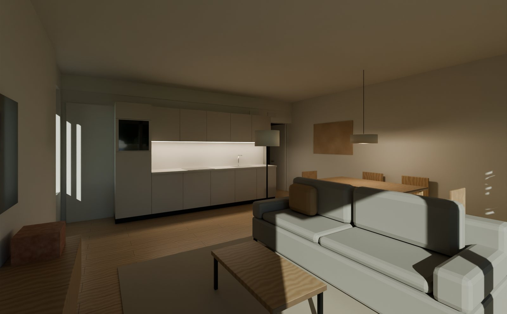
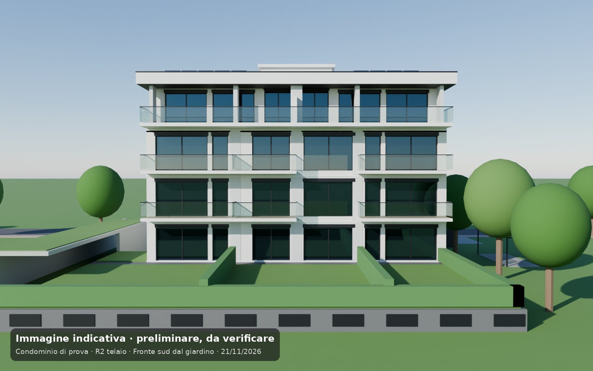
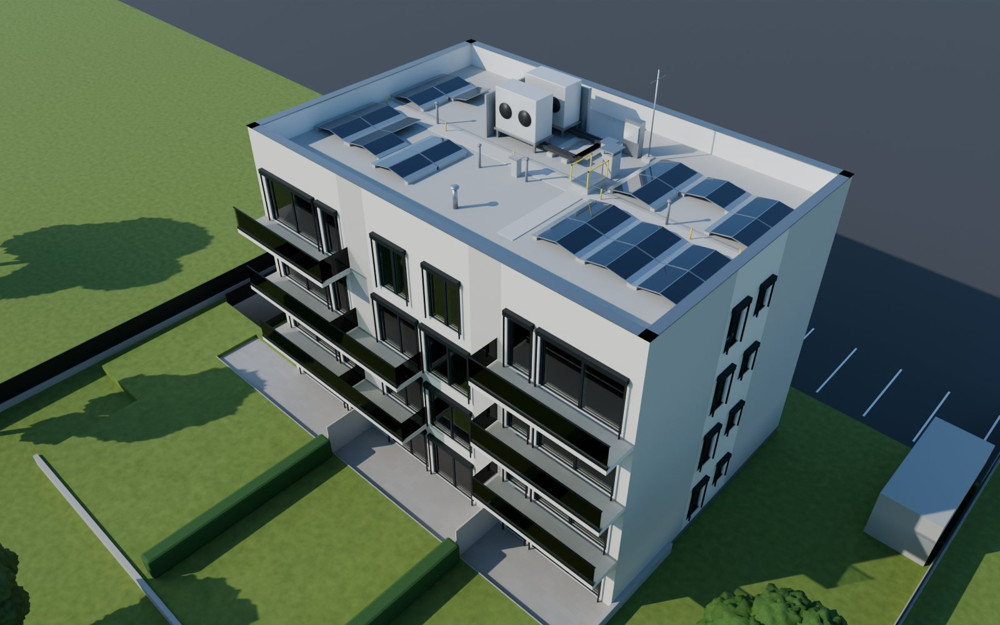
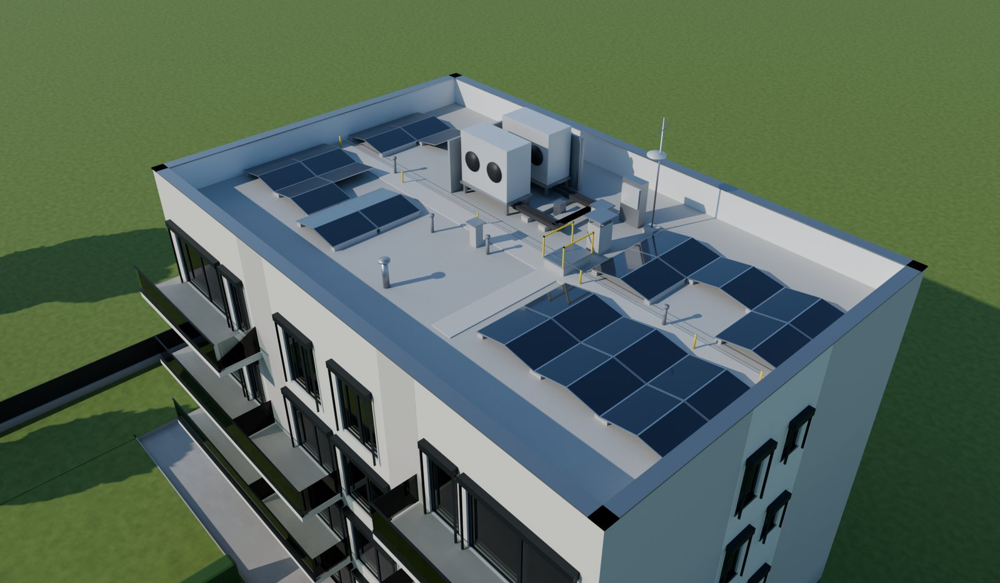

L'edificio
Quattro piani rivolti a sud, tutto elettrico.
Un edificio in linea di 20,60 × 13,50 metri in via Primo Savani, a Parma. Scala e ascensore al centro del fronte nord, soggiorni e balconi a sud, camere a nord. Al piano terra tre alloggi con terrazza e giardino, in gran parte pensile sopra l'autorimessa.
Niente gas: due pompe di calore in copertura, pavimento radiante caldo e freddo, ventilazione meccanica in ogni alloggio, fotovoltaico condominiale con batteria.
- Alloggi
- 113 bilocali · 6 trilocali · 2 quadrilocali
- Piani
- 4 + interratointerpiano 3,15 m · locali alti 2,70 m
- Struttura
- Pareti in c.a.solai a piastra da 25 cm · zona sismica 3
- Involucro
- Lana di roccia 16 cmtriplo vetro · frangisole su 56 finestre
- Fotovoltaico
- 17,1 kWpbatteria da 10 kWh
- Interrato
- 15 posti auto7 posti moto · 11 cantine
- Rinnovabili
- 83% stimato80,6% contando i ventilatori
- Classe energetica
- Non calcolataobiettivo del brief: A4







Immagini indicative ricavate dai modelli Blender costruiti con i dati del progetto. Colori, verde e arredo sono ipotesi.
Comfort
- Cappotto in lana di roccia, 22 cm in copertura
- Finestre legno-alluminio con triplo vetro
- Frangisole orientabili motorizzati
- Pavimento radiante caldo e freddo
Energia
- Due pompe di calore a propano R290
- Fotovoltaico 17,1 kWp con batteria
- Ventilazione con recupero di calore
- Consumi contabilizzati per alloggio
Struttura e silenzio
- Pareti in calcestruzzo armato
- Interrato a vasca impermeabile
- Muri fra alloggi a doppio laterizio
- Massetti galleggianti su tutti i piani
Servizi
- Ascensore dall'interrato al terzo piano
- 15 posti auto predisposti alla ricarica
- Fibra ottica fino all'alloggio
- Recupero dell'acqua piovana